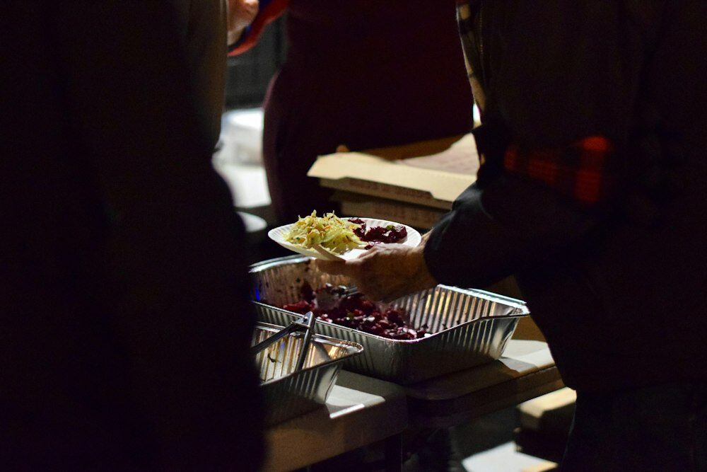
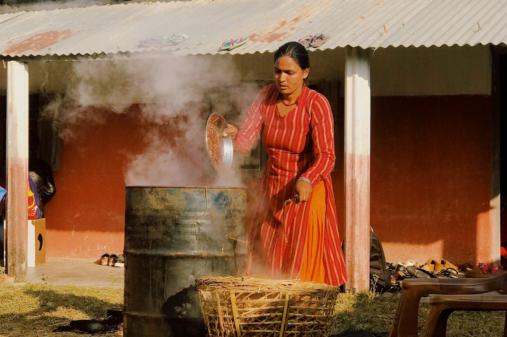
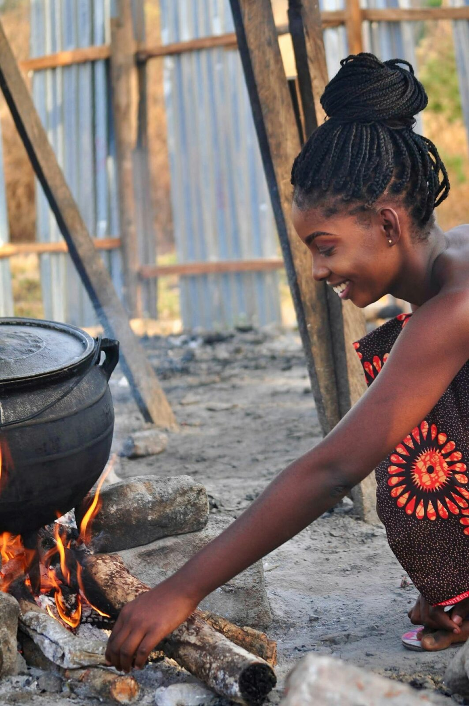
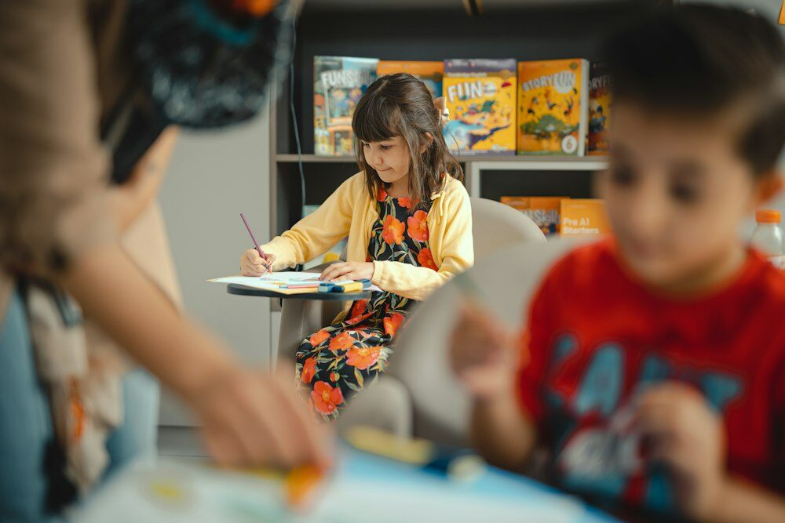
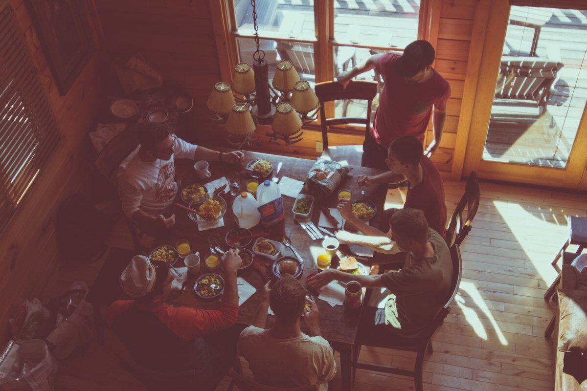
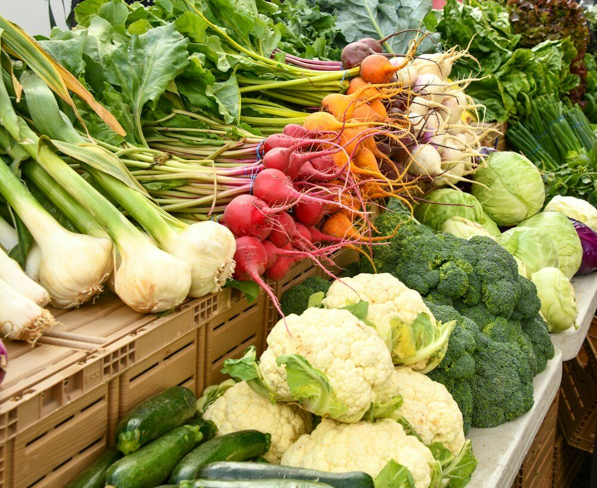

Alimentación
Viandas y meriendas
Cocinamos almuerzos y meriendas para 180 personas por semana. La comida se entrega para llevar y también se comparte en el merendero.

Merendero comunitario · En construcción
Somos un merendero comunitario: cocinamos para las familias del barrio y trabajamos cada día para sostener un espacio digno donde compartir la mesa, aprender y encontrarnos.
Obelisco, CABA · Comida y comunidad desde 2018

Quiénes somos
El Merendero En Construcción nació cuando un grupo de vecinas y vecinos empezó a cocinar viandas en una cocina prestada para las familias del barrio.
Lo que comenzó como un almuerzo por semana hoy es un encuentro de todos los días. Con el apoyo de la comunidad sostenemos un espacio propio: una cocina segura, un salón para comer y un lugar donde también hay apoyo escolar, talleres y mates compartidos.
Qué hacemos
Cada encuentro es una excusa para acompañar a las familias y sostener, entre todos, este merendero.

Alimentación
Cocinamos almuerzos y meriendas para 180 personas por semana. La comida se entrega para llevar y también se comparte en el merendero.

Educación
Acompañamos las tareas de chicas y chicos del barrio dos veces por semana, con libros, útiles y mucha paciencia.

Comunidad
Organizamos talleres de oficios, arte y huerta, además de celebraciones para juntar a las familias y pensar juntos el barrio que queremos.
Donar
Somos un merendero comunitario y todo lo que donás nos ayuda a mantenerlo funcionando: afrontar los gastos de servicios como luz, agua y gas, comprar insumos y cuidar el espacio para que siga abierto todos los días. Elegí la forma que más te guste.

Transferencia o Mercado Pago
Con $5.000 cubrimos una vianda; con $25.000, una semana de meriendas. Tu aporte también ayuda a pagar los servicios y los insumos de todos los días.
Alias merendero.enconstruccion
CBU 0000000000000000000000
Titular Merendero En Construcción
Alimentos e insumos
Todo lo que recibimos se usa en la cocina y en el día a día del merendero. Siempre necesitamos:
Voluntariado
Buscamos manos para cocinar, servir, acompañar las tareas y mantener el espacio en condiciones. No hace falta experiencia: se aprende haciendo.
¿Tenés una empresa o querés armar una colecta? Podemos coordinar la entrega, difundir la campaña y contar en qué se usó cada aporte.
EscribinosUbicación
Usamos la ubicación del Obelisco como ejemplo para esta maqueta. Cuando el merendero tenga su dirección definitiva, se cambia acá y en el mapa.
Av. 9 de Julio y Av. Corrientes — Obelisco, CABA
Ubicación de ejemplo
Lunes a viernes de 11:00 a 15:00 h
Sábados de 10:00 a 13:00 h
Subte B, C o D — Estación Obelisco.
Colectivos 7, 24, 26, 29 y 50.
Contacto
Podés escribirnos para donar, sumarte como voluntario/a, acercar materiales o simplemente conocer más sobre el merendero.
Respondemos de lunes a sábado.